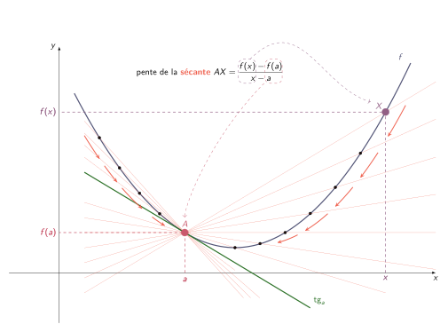

Introduction mathématique aux sciences de la vie
Séance d’exercices du 17/11/25
Remédiations
- Pharma:
- correction du QCM + Q.R. (mardi)
- dérivées (synthèse + Q.R.) (jeudi)
- Biomed: dérivées (synthèse + Q.R.)
- Bio: dérivées (synthèse + Q.R.) (Attention: début de la remédiation à 16h15)
Résolution de problèmes
2.3.I)
Énoncé: \(T(t)=(T_0-A)e^{-k(t-t_0)}+A\). \(t\) en heures.
Données: \(T(9)=30\) et \(T(10)=26\) et \(A=20\), \(T_0=37\). Question: trouver l’heure de la mort de la victime.
2.3.I)
Transformations des fonctions
Exercice 2.2.A) (page 8)
Énoncé: Représentez \(g\), \(h\) et \(i\).

Dérivées
Formulaire:
- Fonctions de référence:
- \((1)'=(2)'=(k)'=0\)
- \((x)'=1\)
- \((x^2)'=2x\)
- \((x^n)'=nx^{n-1}\), où \(n\in\mathbb{R}\)
- \((e^x)'=e^x\) et \((\ln(x))'=\dfrac{1}{x}\).
- \((a^x)'=a^x\ln(a)\) et \((\log_a(x))'=\dfrac{1}{x\ln(a)}\)
- \((\sin(x))'=\cos(x)\) et \((\cos(x))'=-\sin(x)\)
- \((\tan(x))'=1+\tan^2(x)=\dfrac{1}{\cos^2(x)}\)
Formulaire:
- Règles de calcul:
- \((f\pm g)'=f'+g'\)
- \((fg)'=f'g+fg'\)
- \(\left(\dfrac{f}{g}\right)'=\dfrac{f'g-fg'}{g^2}\)
- \((f\circ g)'=(f'\circ g)\cdot g'\)
Exemples:
- \((f\pm g)'=f'+g'\)
Exemples:
- \((fg)'=f'g+fg'\)
Exemples:
- \(\left(\dfrac{f}{g}\right)'=\dfrac{f'g-fg'}{g^2}\)
Exemples:
- \((f\circ g)'=(f'\circ g)\cdot g'\)
3.1.A)
\(\left(\frac{1}{\sqrt{2x}}\right)'=\)
3.1.A)
\(\left(\ln \left( x\text{e}^x \right)\right)'=\)
3.1.A)
\(\left(\sqrt{x^2 (x-1)^{42}}\right)'=\)
3.1.A)
\(\left(\frac{x^3+2x^2}{\cos (1-x)}\right)'=\)
3.1.A)
\(\left(\ln(e^x)\right)'=\)
3.1.A)
-> Faire le reste pour le 24.
Dérivée: interprétation graphique
Soit \(f\) une fonction et \(a\) dans son domaine. Alors \(f'(a)\)= pente de la tengante à \(f\) en \(a\).
Dérivée: interprétation graphique
Donc, pour une fonction \(f\) dérivable en \(a\), la tangente \(\text{tg}_a\) à \(f\) au point d’abscisse \(a\) a les deux caractéristiques suivantes:
- sa pente vaut \(f'(a)\)
- elle passe par le point \((a,f(a))\), ce qui permet de trouver l’ordonnée à l’origine de \(\text{tg}_a\).
3.1.B)
\({f(x) = x^2+x-2}\), au point d’abscisse \(1\)
3.1.B)
\({f(x) = x^2+3x-2}\), parallèle à \(d \equiv y=x+1\)
3.1.B)
3.1.B)
\({f(x) = x^2-x-6}\), tangente comprenant \((0,0)\)
3.1.B)
3.1.C)
-> A préparer pour le 24.
Dérivée: approximation et D.T.
Dériver = approximer une fonction par qqch de plus simple (une droite). Calculer un D.T.= approximer une fonction par une autre fonction plus simple (un polynôme).
Dérivée: approximation et D.T.
3.2.A)
Déterminez le développement de Taylor à l’ordre n au voisinage de a pour la fonction f si
\(f(x) = \sin(x)\), \(n=3\) et \(a=0\)
3.2.A)
3.2.A)
Déterminez le développement de Taylor à l’ordre n au voisinage de a pour la fonction f si
\(f(x) = \ln(x + 1)\), \(n = 3\) et \(a = 0\).
3.2.A)
3.2.B)
Considérons la fonction \(f(x) = \sqrt{x}\).
- Déterminez une approximation linéaire \(L(x)\) de la fonction \(f(x)\) au voisinage de \(a=1\).
3.2.B)
Considérons la fonction \(f(x) = \sqrt{x}\).
3.2.B)
Considérons la fonction \(f(x) = \sqrt{x}\).
- En vous basant sur l’approximation linéaire \(L(x)\), déterminez une valeur approchée de \(\sqrt{1,01}\).
3.2.B)
Considérons la fonction \(f(x) = \sqrt{x}\).
- En sachant que \(\sqrt{1,01} = 1,00498\ldots\), commentez votre résultat pour la valeur approchée calculée au point précédent.
3.2.D) et 3.2.E)
–> prépa pour le 24.